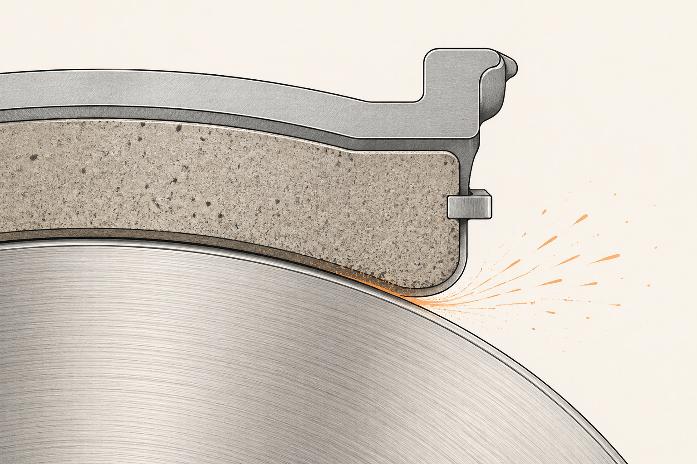

Pastilla y disco: el binomio sacrificable
Hasta aquí hemos visto el sistema de transmisión de fuerza (la hidráulica) y la geometría de la fricción (disco vs tambor). Toca el momento del contacto físico, donde la energía cinética se convierte realmente en calor: la pareja pastilla-disco. Es donde está toda la acción y, no por casualidad, la zona donde el cliente verá los avisos antes que en ningún otro sitio.
Una pieza diseñada para morir
La pastilla es la única pieza del sistema diseñada deliberadamente para gastarse. No es un fallo, es la idea: que se desgaste ella y proteja al disco. Como la goma de borrar, que se va consumiendo mientras el papel queda intacto. Si fuera al revés — pastilla eterna, disco que se gasta — tendrías que cambiar discos cada año y el coste sería absurdo.
Por eso la pastilla es lo que cambias rutinariamente. El disco también acaba gastándose, pero a un ritmo mucho más lento: como regla mental, un juego de discos sobrevive típicamente a dos juegos de pastillas.

Anatomía rápida de la pastilla
Una pastilla son dos capas pegadas:
Placa de soporte: una pieza metálica rígida que se aloja en la pinza. Es la parte que dura, se reutiliza el alojamiento.
Material de fricción: el "compuesto" que muerde el disco. Es lo que se gasta. Aquí está toda la ingeniería.
Y dos componentes pequeños pero importantes:
Capa antirruido (shim): una lámina fina entre la placa y el émbolo de la pinza. Su trabajo es absorber las micro-vibraciones que generan los chirridos. Cuando un cliente se queja de "ruido al frenar suave", a veces es un shim mal montado o ausente.
Indicador de desgaste: una pestaña metálica lateral (chivato mecánico) que, cuando la pastilla está casi al final, empieza a rozar el disco y produce un chirrido agudo y constante. En coches modernos hay además un sensor electrónico que enciende un testigo en el cuadro antes de llegar a ese punto.
Tres compuestos, tres carácteres
El material de fricción no es uno solo: hay familias de compuestos con perfiles muy distintos. La elección define cómo se va a portar la pastilla.
La elección no es académica: el polvo de las pastillas semimetálicas es el principal culpable de las llantas tiznadas de negro que tantos clientes quieren entender. No es suciedad ambiental, es el desgaste normal de su pastilla. Y a veces es exactamente la pastilla que el coche pide para frenar bien.
Cuánto duran (orientativo)
Una pastilla delantera de un coche medio en uso urbano-mixto suele durar entre 30.000 y 60.000 km. En carretera y conducción suave puede llegar a 70.000-80.000. En ciudad densa con paradas constantes, baja a 25.000-35.000. La conducción manda mucho más que el kilometraje en sí.
Las pastillas traseras duran bastante más — 60.000 a 100.000 km — porque trabajan menos (recuerda: el delantero se come el 70-80% de la frenada).
Los discos duran típicamente dos juegos de pastillas: 60.000 a 120.000 km. Si los cambias antes, normalmente es por alabeo, ralla profunda o porque están al límite de espesor mínimo (viene marcado en el propio disco).
La frase que te llevas
La pastilla es la pieza sacrificable que protege al disco. Lo que el cliente percibe como "el coche hace ruidos raros" es casi siempre la pastilla hablando: chirridos, polvo, vibraciones. Aprender a traducir esos avisos a causa técnica es el corazón del CX en frenos.
Hasta aquí hemos visto la mecánica pura: fuerza, geometría, materiales. Toca dar un salto a la electrónica que orquesta todo: ABS, ESP y compañía. La siguiente píldora.
fácil ¿Por qué se diseña la pastilla para gastarse y no el disco?
medio Un cliente cambia su utilitario por un coche premium y dice "ya no se me ensucian las llantas, mucho mejor". ¿Qué ha cambiado realmente?
Casi seguro el tipo de pastilla. El utilitario probablemente llevaba pastillas semimetálicas (más baratas, más mordida pero más polvo). El coche premium suele venir con pastillas cerámicas o de baja emisión (más caras, polvo claro y poco visible).
Las llantas no están "más limpias" porque el coche sea mejor: están más limpias porque la pastilla deja menos rastro. Es una decisión de diseño. Esto se puede explicar al cliente con tranquilidad y sin meter teoría: "la pastilla de tu coche nuevo está hecha de un material distinto que casi no deja polvo".
reto Un cliente vuelve diciendo: "Justo después de cambiar pastillas, el coche frena raro los primeros días y hace ruidos. ¿Está mal el cambio?" Explícale lo que pasa.
No, está bien — lo que pasa es el rodaje de la pastilla. Una pastilla nueva tiene una superficie completamente plana de fábrica, mientras que el disco tiene su micro-relieve concreto (el patrón que el disco fue desarrollando con la pastilla anterior). En las primeras decenas o cientos de kilómetros, la pastilla y el disco "se conocen": la pastilla se va adaptando a la huella del disco hasta que el contacto es completo y uniforme.
Durante ese rodaje, es normal que:
1) La frenada se sienta menos firme o más larga (la pastilla aún no muerde con toda su superficie).
2) Aparezcan ruidos esporádicos (puntos donde el contacto aún no es perfecto).
3) Si el compuesto es semimetálico, deje algo más de polvo del habitual al principio.
Recomendación: en los primeros 200-300 km, evitar frenazos brutales y dejar que el sistema "aprenda". Pasada esa fase, todo se normaliza. El CX aquí es claro: explicarlo antes del cambio o al entregarlo evita la llamada de "algo va mal" — convierte un comportamiento normal en una expectativa cumplida.